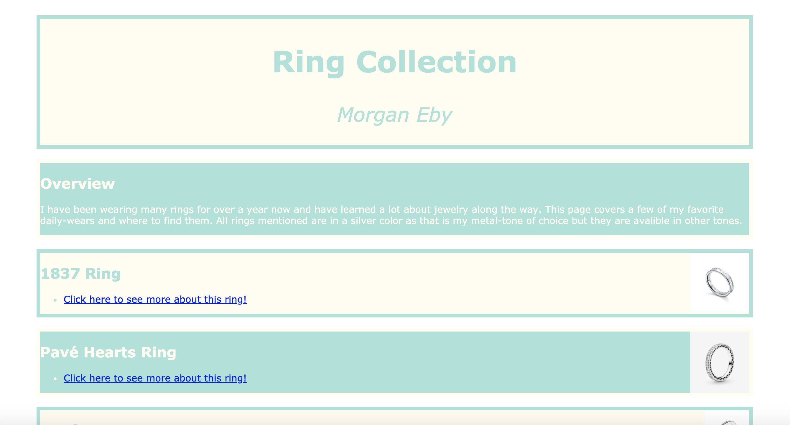

My Portfolio
By Morgan Eby
Home
Gallery
Contact
Artificial Intelligence
Internet Service Provider Century Link
Explore the Pacific Northwest

Ring Collection
Which Nail Style is Best For You
Red Panda - Endangered
About Me